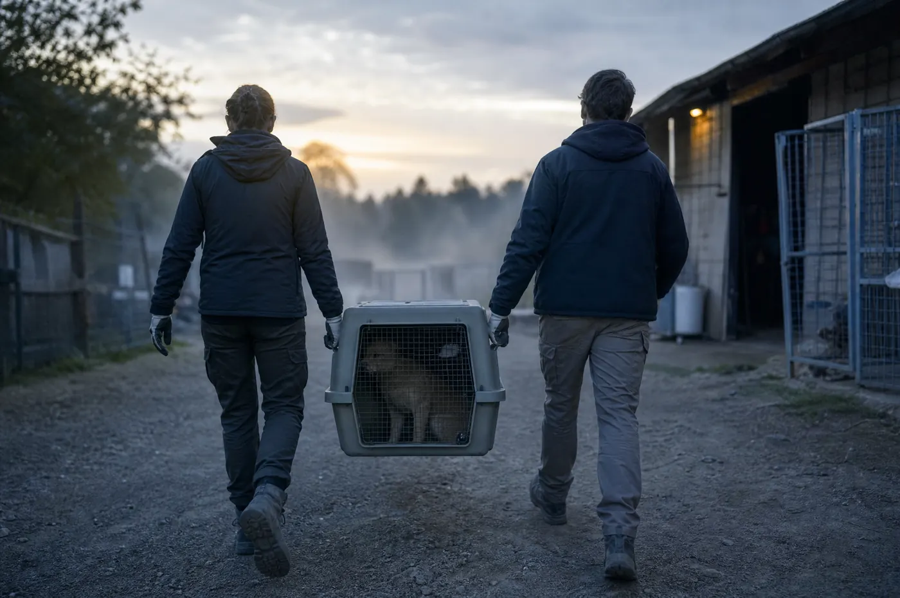

구조, 치료, 회복, 인식개선. 우리가 하는 일과, 그 일의 주인공들 이야기입니다.

제보를 받으면 지자체·경찰과 함께 들어갑니다. 모든 구조는 사진·진료 기록·날짜로 남깁니다. 그 기록이 나중에 그 아이를 지켜 주니까요.
피부병, 골절, 심장사상충, 트라우마. 협력 병원이 치료하고 센터와 임보 가정이 회복시킵니다. 준비되기 전에는 입양 공고를 올리지 않아요.
개농장 폐쇄 서명, 번식장 규제, 입양 우선 캠페인. 액터(캠페인 활동가)로 함께해 주세요.